Mythic Protocol
Landing page untuk game Mythic Protocol.
WEB & MOBILE DEVELOPMENT
Saya Yusuf. Berikut kumpulan proyek web dan mobile—mulai dari landing page, dashboard, hingga sistem informasi.
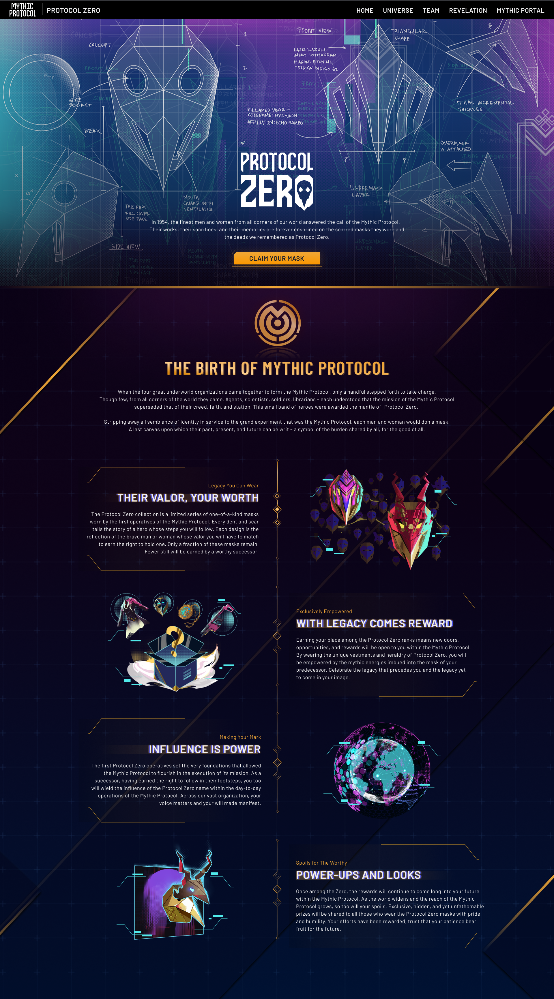
LANDING PAGE
PORTOFOLIO PROYEK
11 proyek / Web & Mobile
Landing page untuk game Mythic Protocol.
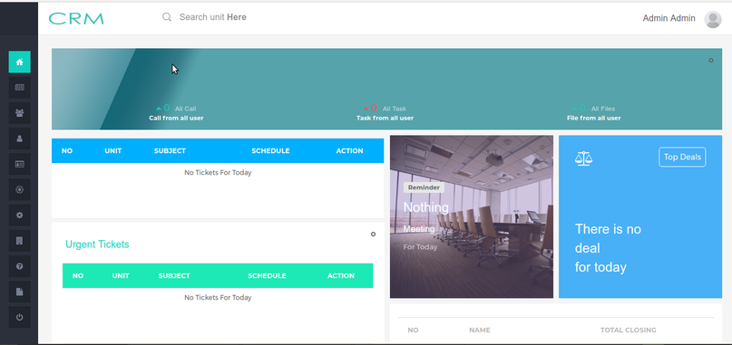
Aplikasi untuk mengelola interaksi perusahaan dengan pelanggan dan calon pelanggan.
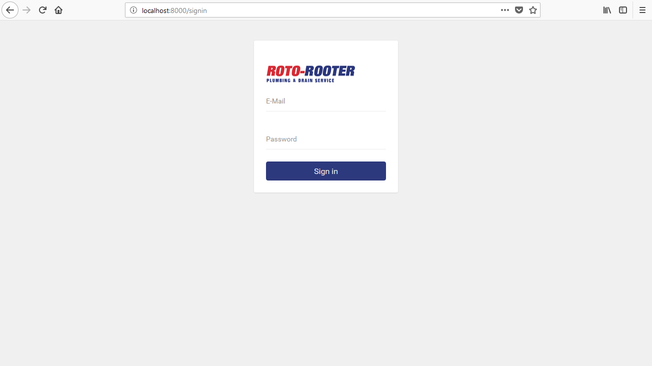
Dashboard pengelolaan company profile Roto-Rooter.
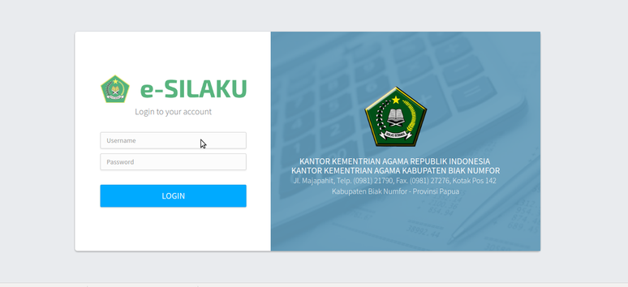
Sistem Informasi Layanan Keuangan Terpadu yang mendukung tata kelola, pelaksanaan SOP, e-Government, dan akuntabilitas kinerja keuangan.
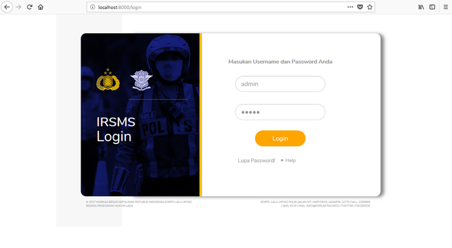
Integrated Road Safety Management System untuk pendataan kecelakaan lalu lintas.
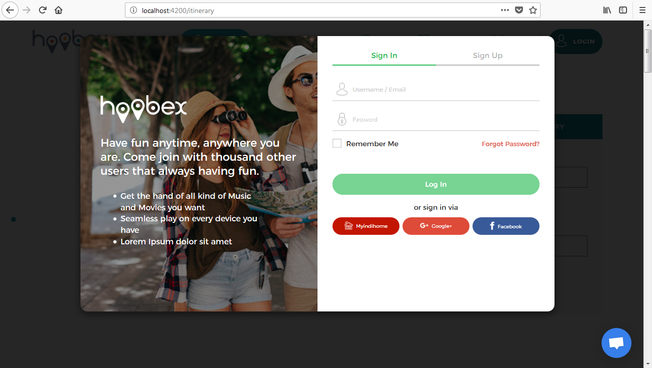
Aplikasi media sosial untuk traveler.
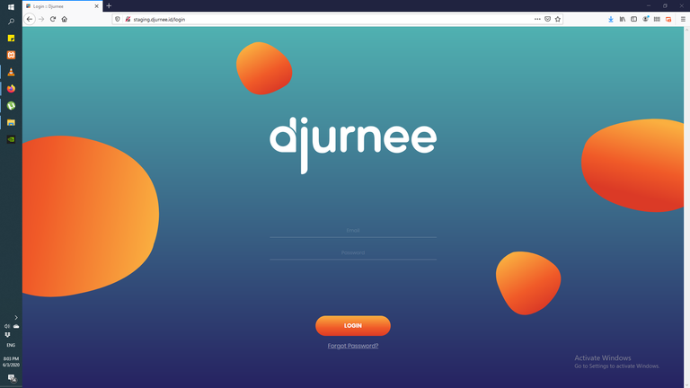
Aplikasi untuk penugasan perjalanan bagi traveler.
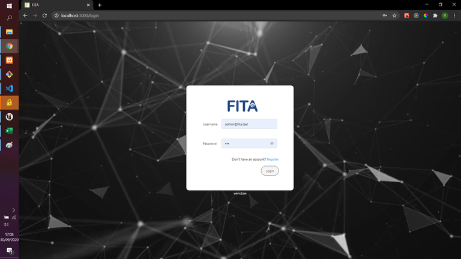
Dashboard administrasi untuk pengelolaan daftar data tower.
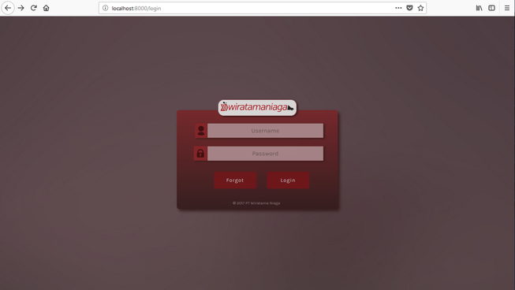
Aplikasi untuk pencatatan barang masuk dan barang keluar.
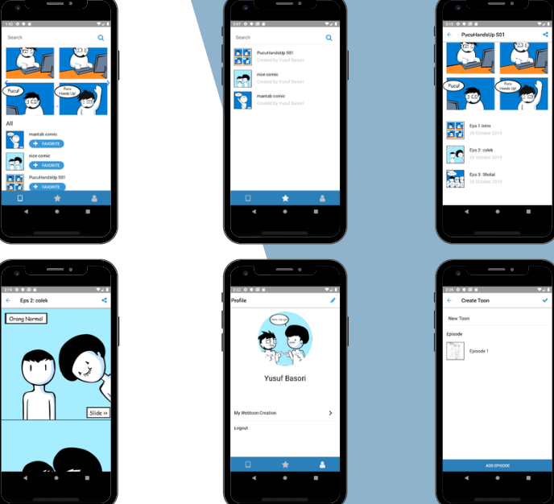
Aplikasi mobile untuk berbagi komik orisinal, terinspirasi dari Webtoon. Dikembangkan dalam tiga minggu.
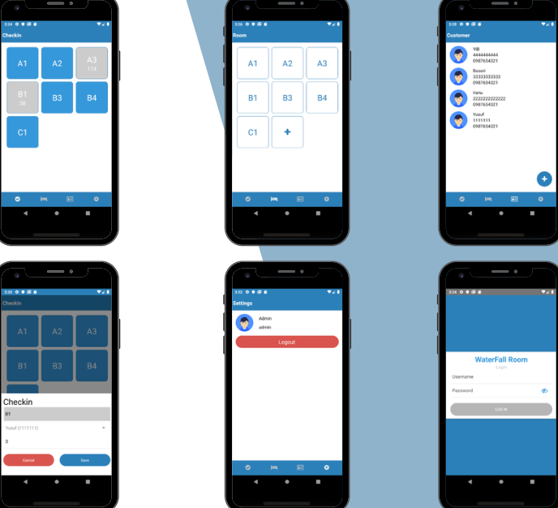
Aplikasi mobile bagi administrator untuk mengelola ruangan dan pelanggan. Dikembangkan dalam lima hari.
PORTOFOLIO LENGKAP
Lihat screenshot dan detail teknologi pada dokumen portofolio asli.